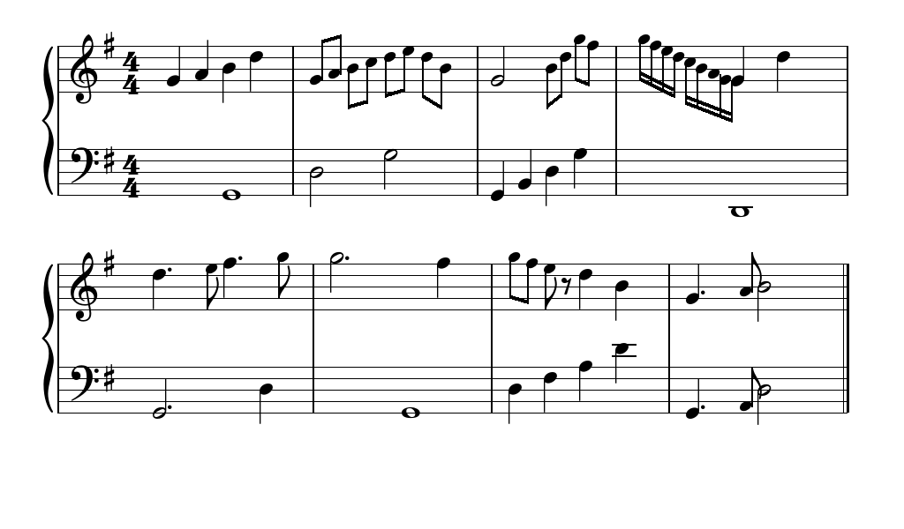

Staff, Bar, Note, Rest
The core hierarchy beneath Score. These objects are created automatically by load_musicxml() and can also be constructed programmatically.

Staff
A single staff — five horizontal lines and a list of bars. Instantiated by Score. Access via score.staffs[index].
| Property | Type | Description |
|---|---|---|
| bars | list[Bar] | All bars on this staff, in order. |
| clef_type | str | "treble" or "bass". |
| space | int | Pixel distance between adjacent staff lines. Derived from the font size. |
| position | list[int] | [x, y] pixel origin of this staff on the current surface. |
| length | int | Staff width in pixels (equals Score.length). |
| score | Score | Back-reference to the owning Score. |
Bar
A single measure. Holds events (notes and rests), tracks beat capacity, and handles beam grouping for eighth/sixteenth notes. Access via staff.bars[index].
| Property | Type | Description |
|---|---|---|
| events | list[Note | Rest] | All note and rest events in chronological order. |
| index | int | Zero-based bar index within the staff. |
| time | tuple[int, int] | Local time signature (always equal to the score's time signature). |
| bar_start_x | float | Pixel X of the bar's left barline within the system. |
| barspace | float | Allocated pixel width for this bar. |
Returns remaining beat capacity in this bar as a float (0.0 = full). One whole note = 1.0 unit of capacity. A 4/4 bar starts at 1.0 and decreases as events are added.
bar = score.staffs[0].bars[0]
print(bar.spaceAvailable()) # 1.0 (empty 4/4 bar)
score.addNote("half", "C4")
print(bar.spaceAvailable()) # 0.5
score.addNote("half", "E4")
print(bar.spaceAvailable()) # 0.0 (bar full)
Note
A single notated pitch. Instantiated by Score.addNote(). Access via bar.events.
Note(ntype="whole", pitch="C4", staff=None)| Property | Type | Description |
|---|---|---|
| type | str | Duration type string, e.g. "quarter". |
| pitch | str | Scientific pitch notation, e.g. "F#4". |
| color | tuple | None | RGB color override for the notehead. None uses the default (black). Set to a color tuple to highlight a note: note.color = (220, 60, 60). |
| beamed | bool | Set to True by the bar renderer when this note is part of a beam group. Read-only in practice. |
| offset | float | Fractional horizontal position within the bar (0.0 = start, 1.0 = end). Computed by Bar.calculateMetrics(). |
Highlight a note
Set note.color to an RGB tuple to draw attention to specific notes — for example, highlighting the currently played key in Pianove.
bar = score.staffs[0].bars[0]
note = bar.events[0]
note.color = (52, 199, 89) # green highlight
# Returns to normal on next frame if you reset it:
note.color = NoneRest
A rest symbol. Instantiated by Score.addRest(). Accepts the same duration types as Note. Rests have no pitch and render as standard music notation rest glyphs (half rest, quarter rest, etc.) using the Bravura font.
Rest(rtype="quarter", staff=None)| Property | Type | Description |
|---|---|---|
| type | str | Duration type string. |
| offset | float | Horizontal position within the bar (computed by Bar). |
Clef, KeySignature, TimeSignature, Brace
These elements are created automatically by Score. You generally do not interact with them directly. They are listed here for completeness.
Clef
Clef(ctype="treble", staff=None)
# ctype: "treble" or "bass"
# Accessed via: score.clefs[staff_index]KeySignature
KeySignature(accidentals=0, staff=None)
# accidentals: -7 (7 flats) to +7 (7 sharps). 0 = C major.
# Accessed via: score.key_signatures[staff_index]The width property returns the pixel width of the rendered key signature — used internally to compute score.frontal_offset.
TimeSignature
TimeSignature(staff=None)
# Reads time from score.time
# Accessed via: score.time_signatures[staff_index]Brace
Brace(staves: list[Staff], surface: pygame.Surface)
# Created automatically when staffs > 1
# Accessed via: score.braceThe brace renders the vertical curly bracket connecting two staves (standard for piano notation). Call score.brace.reset() if you update the staff layout manually.
Chord
Chord(
notes: list[Note], # two or more Note objects at the same rhythmic position
staff=None,
)Groups two or more Note objects that sound simultaneously. Notes are automatically sorted by pitch (highest first) and adjacent semitones are offset horizontally to prevent notehead overlap. A single stem is shared across all notes, with stem direction determined by the median pitch.
In practice Chord objects are created automatically by load_musicxml(). For programmatic use, add a Chord to a bar the same way as a single note:
from pylute import Note, Chord, Score
score = Score(surface=screen, staffs=1, bars=4, key="C", time=(4, 4))
bar = score.staffs[0].bars[0]
chord = Chord([Note("quarter", "C4"), Note("quarter", "E4"), Note("quarter", "G4")])
bar.notes.append(chord)
score.draw()The color attribute on a Chord overrides the colour of all its noteheads. Individual notes retain their own color when Chord.color is None.
Tuplet
Tuplet(
notes: list[Note],
actual: int = 3, # how many notes are played…
normal: int = 2, # …in the time of this many
staff=None,
)Wraps a group of notes that are to be played in irregular time — most commonly a triplet (actual=3, normal=2: 3 notes in the time of 2). A bracket with the tuplet number is drawn above or below the group. As with Chord, tuplets are built automatically from MusicXML; direct construction looks like this:
from pylute import Note, Tuplet, Score
score = Score(surface=screen, staffs=1, bars=2, key="C", time=(4, 4))
bar = score.staffs[0].bars[0]
# Triplet: 3 eighth notes in the time of 2
triplet = Tuplet(
notes=[Note("eighth", "C4"), Note("eighth", "E4"), Note("eighth", "G4")],
actual=3,
normal=2,
)
bar.notes.append(triplet)Returns the actual beat duration of the tuplet group. For a standard triplet of eighth notes this is 1.0 (one quarter-note beat).
Dynamic
Dynamic(
mark: str, # "pp", "p", "mp", "mf", "f", "ff", "fff", "ffff",
# "ppp", "pppp", "sf", "sfz", "sfp", "rfz", "fz", "fp"
staff=None,
above: bool = False, # True = render above the staff, False = below (default)
)Renders a SMuFL dynamic glyph from the bundled music font. Dynamics are attached to a bar's notes list alongside notes and rests; the bar renderer positions them at the correct x offset before calling draw().
from pylute import Note, Dynamic, Score
score = Score(surface=screen, staffs=1, bars=4, key="C", time=(4, 4))
bar = score.staffs[0].bars[0]
bar.notes.append(Note("quarter", "C4"))
bar.notes.append(Dynamic("mf")) # appears under the first note
bar.notes.append(Note("quarter", "E4"))Articulation
Articulation(
mark: str, # "staccato", "accent", "tenuto", "marcato",
# "fermata", "staccatissimo", "stress", "unstress"
staff=None,
above: bool = True, # True = above notehead (default), False = below
)Renders an articulation glyph above or below a notehead. Like Dynamic, articulations live in a bar's notes list and are positioned automatically. Articulation and Dynamic objects found in MusicXML are attached to their notes automatically by load_musicxml().
from pylute import Note, Articulation, Score
score = Score(surface=screen, staffs=1, bars=4, key="C", time=(4, 4))
bar = score.staffs[0].bars[0]
bar.notes.append(Note("quarter", "C4"))
bar.notes.append(Articulation("staccato")) # dot above the C4
bar.notes.append(Note("quarter", "E4"))
bar.notes.append(Articulation("accent")) # accent on E4